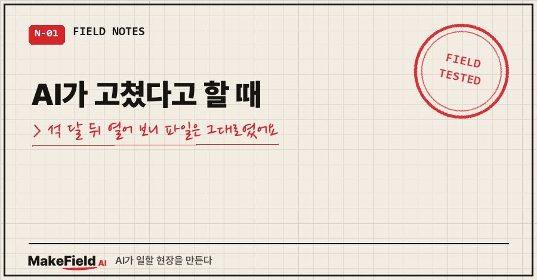
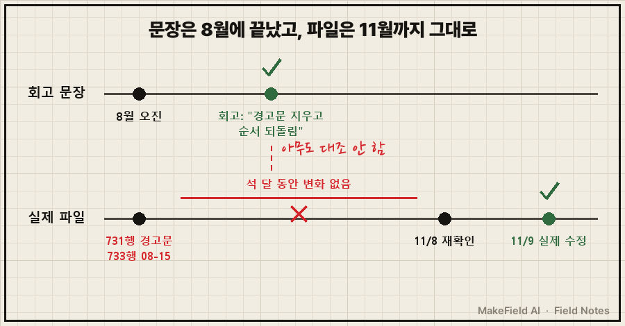
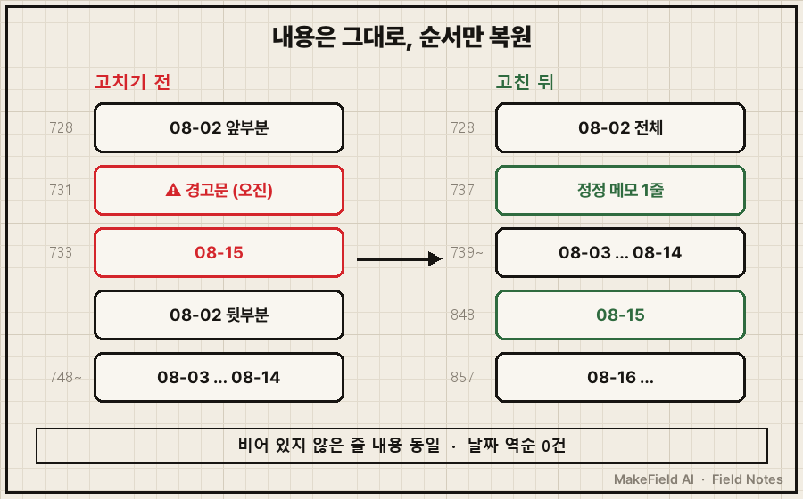
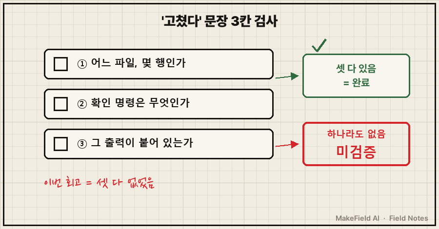

AI가 고쳤다고 할 때, 저는 그 문장을 결말로 읽고 넘어갔어요.
석 달 뒤에 그 파일을 다시 열었더니, 고쳤다던 경고문이 731행에 그대로 박혀 있었습니다.
먼저 결론부터 적을게요.
AI가 쓴 보고·회고의 "고쳤다" 문장은 실제로 고쳤다는 증거가 아니라 이야기를 닫는 결말 문장입니다. 그래서 저는 이제 "고쳤다" 한 줄마다 확인할 대상(파일 몇 행, 명령 출력 한 줄)을 같이 붙여요. 이번엔 그 한 줄이 없어서 석 달을 놓쳤습니다.
제조 현장에서 자동화 설비를 15년 가까이 만져 왔어요.
현장에선 보고서에 "조치 완료"가 적혀 와도 직접 가서 봐야 끝난 걸로 칩니다.
그 습관을 AI가 쓴 글에는 안 붙여 놨더라고요..
1. 회고엔 뭐라고 적혀 있었나요?
지난 8월 일이에요. 개인 공부 루틴 하나를 AI한테 매일 새벽 맡겨 두는데, AI가 하루치 요약을 누적 기록 파일에 덧붙여요.
그날 AI가 "8월 3일~14일, 12일치가 없다"고 판단하고 파일 한가운데에 경고문을 직접 박았습니다.
> ⚠️ [로그 공백] 2026-08-02 항목이 ... 끊겨 있고 08-03~08-14 항목이 이 파일에 없음
... 원인 미상(자동화가 로그 기록 단계를 누락한 것으로 추정, 미검증)실제로는 12일치가 다 있었고, 8월 15일 항목이 8월 2일 본문 사이에 끼어 순서만 뒤섞였던 거예요.
이 오진을 AI랑 같이 회고로 정리해 이 블로그에도 올렸는데요, 마무리가 이랬습니다.
그날 제가 실제로 고친 건 자동화가 아니었어요.
잘못된 경고문 한 줄을 지우고, 파일 순서를 되돌려놓은 게 전부입니다.같은 글엔 "됐다고 오통과하면 아무도 안 열어봅니다"라는 문장도 있었어요. 그 글 자신에 대한 예언이 됐죠.
2. 석 달 뒤 열어 보니 731행에 경고문이 그대로였어요
11월 8일, 다른 글을 쓰다 그 회고를 근거로 원본을 다시 열었다가 경고문이 남아 있는 걸 봤어요. 다음 날 날짜 제목 줄만 줄 번호와 같이 뽑아 다시 확인했습니다.
grep -n "^### 2026-08\|로그 공백" 누적기록.md728:### 2026-08-02
731:> ⚠️ [로그 공백] ... ← 지웠다던 경고문
733:### 2026-08-15 ← 되돌렸다던 순서
748:### 2026-08-03경고문도, 뒤섞인 순서도 그대로였어요. "고쳤다"는 일은 회고 문장 안에서만 일어났던 겁니다.
회고엔 "점검 할 일도 같이 닫았다"는 문장도 있었는데, 기록을 뒤져도 근거를 못 찾았어요. 그 문장은 확인 불가로 남겨 둡니다.

3. AI가 고쳤다고 할 때, 왜 아무도 안 열어 볼까요?
이유는 글의 모양에 있었어요. 회고는 문제→삽질→교훈으로 흘러가고, 이야기가 끝나려면 "그래서 고쳤다"는 결말이 필요합니다.
AI는 이야기를 잘 매듭짓는 쪽으로 써요. 결말이 그럴듯할수록 읽는 사람은 검증을 건너뛰고요.
현장 서류로 치면 "조치 완료" 칸에 도장만 찍히고 사진은 안 붙은 상태예요. 도장이 깔끔하면 아무도 현장에 안 갑니다.
여러분 AI 보고서의 "수정 완료", "반영했습니다" 중 몇 개나 실물을 열어 보셨나요?
4. 이번엔 진짜 고치고, 고친 걸 숫자로 남겼어요
이번엔 글을 쓰기 전에 파일부터 고쳤어요.
- 고치기 전 원본을 날짜 붙여 따로 보관
- 8월 15일 항목을 8월 14일 뒤로 옮김
- 경고문은 지우되, 그 자리에 "이 경고는 오진이었다"는 정정 메모 한 줄을 남김
- 옮기기 전후로 비어 있지 않은 줄 내용이 같은지 대조
그리고 같은 명령으로 다시 뽑았어요.
728:### 2026-08-02
737:> [정정 2026-11-09] 이 자리에 있던 '로그 공백' 경고(2026-08-15 기록)는 오진이었음 ...
739:### 2026-08-03
848:### 2026-08-15 ← 8월 14일 뒤로
857:### 2026-08-16파일 전체 날짜 제목 줄을 훑어 순서가 거꾸로 된 곳도 세어 봤더니 역순 0건이었어요. 이번 "고쳤다"엔 이 출력이 붙어 있습니다.

5. '조치 완료' 문장마다 붙이는 확인 대상 한 줄
지금은 AI 보고·회고를 받을 때 "완료라고 쓴 문장마다 확인 명령과 그 출력 한 줄을 붙여 줘"라고 같이 시켜요.
| AI가 쓴 문장 | 붙여야 할 확인 대상 | 이번 건 |
|---|---|---|
| 경고문을 지웠다 | 경고 원문(⚠️ [로그 공백])으로 검색 → 0줄 | 731행에 그대로 있었음 |
| 순서를 되돌렸다 | 제목 줄 + 줄 번호 목록 | 733행 08-15가 748행 08-03보다 앞 |
| 할 일을 닫았다 | 할 일 목록의 완료 기록 | 근거 못 찾음 |
출력이 안 붙은 "완료"는 미검증으로 읽어요. 현장 서류랑 같은 기준입니다.

자주 받는 질문
Q. AI한테 "진짜 고쳤어?"라고 다시 물으면 안 되나요?
같은 대화에서 물으면 "네, 고쳤습니다"가 또 나오기 쉬워요. 그 답도 문장이니까요.
대신 확인 방법을 지정하세요. "그 문구로 파일 검색해서 결과 줄 수를 보여 줘"처럼요. 줄 번호 붙은 출력은 문장보다 속이기 어렵습니다.
Q. 윈도우에선 grep이 없는데요?
PowerShell의 Select-String이 파일 이름·줄 번호·줄 내용을 같이 보여 줘요(마이크로소프트 공식 문서). grep은 -n 옵션이 각 줄 앞에 줄 번호를 붙입니다(GNU grep 매뉴얼).
AI가 고쳤다고 할 때 제가 바꾼 건 순서 하나예요. 예전엔 정리 문장이 먼저였다면, 이제는 출력이 먼저고 문장은 그다음입니다.
"고쳤다"를 출력으로 다시 확인해 가는 기록은 makefield.ai에서도 이어 보실 수 있습니다.
출처
- GNU grep 매뉴얼 — -n, --line-number: 출력 각 줄 앞에 입력 파일 기준 줄 번호를 붙임 → https://www.gnu.org/software/grep/manual/grep.html
- Microsoft Learn, Select-String (PowerShell) — 정규식 검색, 파일 이름·줄 번호·줄 내용 출력 → https://learn.microsoft.com/en-us/powershell/module/microsoft.powershell.utility/select-string
태그: #AI가고쳤다고할때 #AI조치완료확인 #AI작업결과확인 #AI보고서검증 #AI회고 #AI오답노트 #AI검증방법 #AI결과물검증 #조치완료보고 #작업보고서 #grep줄번호 #SelectString #누적기록파일 #개인AI자동화 #MakeFieldAI